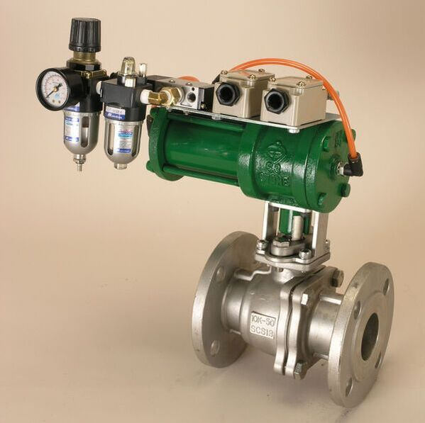

通常在氣壓設備系統中空壓機輸出端會加裝三點組合，而客戶指定氣缸加裝電磁閥時，我們也會建議使用者加裝三點組合。
當空氣從空壓機等設備輸出時，壓縮空氣中含有雜質、水氣及油份，若沒安裝三點組合可能會使管路及氣缸等空氣流經過部分生鏽、氧化甚至磨損。
三點組合又稱為空氣調理組其功能為：
．過濾：空氣濾清
．調壓：調整壓力
．給油：給予潤滑

過濾：空氣濾清
作動原理為利用內部葉片旋轉造成離心力，分離壓縮空氣中的水氣及雜質微粒並聚集在杯底，壓縮空氣則經濾網由出口排出。若空氣未先過濾可能影響其後續部分，所以過濾器必須裝在第一個位置。
調壓：調整壓力
調整壓縮空氣減壓至工作壓力後輸出，壓力表可讀輸出之壓力大小。壓力調整只能減壓無法加壓。假設輸入壓力為5bar，則調整後輸出壓力僅能低於5bar，無法高於輸入壓力。
給油：給予潤滑
利用文氏管原理將油杯內的潤滑油和空氣混合，混合後成油霧狀輸出，使管路、電磁閥等等相關配件及氣缸內部零件潤滑，維持其功能及延長使用壽命。